Accès ordinateur
Les switchs adaptées permettent d’utiliser une multitude d’outils de communications et d’appareils adaptés. En plus de ces fonctions, avec l’équipement nécessaire, elles peuvent aussi donner le contrôle sur du matériel informatique. En la branchant à un adaptateur, il est possible d’utiliser la même switch qui permet d’activer un jouet pour simuler l’appui d’une touche de clavier, du mouvement ou du clic d’une souris ou alors l’utilisation d’une manette de jeu.
En utilisant sensiblement la même technologie qui permet de fabriquer des claviers personnalisés, il est possible de réaliser un tel appareil relativement facilement. L’intérêt de créer un tel appareil est venu des considérations suivantes.
- Les appareils équivalents sur le marché coûtent entre 150 (microsoft hub) et 200 (Hitch 2.0) dollars, ce qui est dispendieux considérant le niveau de technologie utilisé et les pièces nécessaires. Initialement, le hub de microsoft avait été annoncé à 75 dollars au cours de l’année 2023, ce qui était somme toute raisonnable et avait conduit à laisser de côté la création de notre accès à l’ordinateur. Suite à l’augmentation drastique du prix, nous avons décidé de mettre à jour l’appareil et de publier ce tutoriel.
- D'autres appareils ayant une fonction semblable sont disponibles sur le web, par exemple, sur le site de MakersMakingChange. Cependant, à notre connaissance, ils requièrent tous un PCB personnalisé et utilisent la plateforme Arduino. L’idée était donc de faire une version plus simple à créer. Par ailleurs, il était aussi souhaité d’utiliser les mêmes technologies que pour nos autres projets (circuitpython et raspberry pico) dû à leur disponibilité et leur coût. Aussi, les mêmes outils et technologies utilisés pour les autres appareils créés par Adaptatech sont mis à profit, ce qui vient aussi réduire le coût vu l’économie d’échelle.
- La personnalisation d’un tel appareil permet aussi des ajustements aux besoins particuliers des usagers au niveau local. Par exemple, il est possible d’ajouter ou de modifier des entrées plus facilement avec l’accès à tout le matériel de création. À mesure que l’appareil est utilisé, il est ainsi possible d’ajouter des fonctions dépendamment des besoins. C’est ce qui a, par exemple, guidé l’ajout d’une version avec une entrée compatible avec un appareil analogue suivant le standard XAC. Ainsi, il est possible de faire un appareil qui est à la fois plus de dix fois moins cher que les alternatives commerciales mais aussi intéressant étant donné son potentiel d’adaptabilité.
- Finalement, la conception d’un tel appareil a été une occasion de développer nos connaissances face à l’interaction entre le matériel adapté et les appareils informatiques, ce qui s’est avéré utile pour d’autres projets. Cela s’est avéré un défi intéressant et démonrte la possibilité de créer une interface entre le matériel adapté qui est actuellement en possession d'un utilisateur et diverses plateformes technologiques.
Habiletés nécessaires
Ce guide fournit les fichiers 3D, le circuit électronique ainsi que le code en circuitpython nécessaire à la création d’un exemplaire de cet appareil. Il n’est donc pas nécessaire de connaître le dessin 3D ou la programmation. Cependant, il est nécessaire d’avoir des habiletés de base en microsoudure et d’avoir accès à une imprimante 3D ainsi qu’un ordinateur.
Fonctionnement
Afin d’utiliser cet appareil, il suffit de le brancher à un port USB d’un appareil compatible avec le protocole HID (typiquement, tous les ordinateurs Windows et Mac le sont). Des modes permettant d’utiliser les entrées qui sont typiquement les plus pertinentes (espace, entrée, clics de souris, chiffres et flèches du clavier) sont préprogrammés et détaillés dans le guide d’utilisation. Il est possible de modifier ces modes suite à la construction de l’appareil grâce à des changements dans la programmation. L’appareil de base a 5 entrées, qui sont toutes compatibles avec tous les modèles de switchs adaptées, qu’ils soient commerciaux ou fabriqués grâce à l’impression 3D. La version analogique de l’appareil comprend une sixième entrée sur le côté avec une prise différente (TRRS) qui permet d’utiliser un joystick analogique, respectant le standard du XAC, comme une souris (les explications pour cette deuxième version sont à la fin de cette page).
Matériel nécessaire
Avant de commencer l’assemblage, faire l’inventaire de ce qui est nécessaire est utile afin de s’assurer que rien ne soit oublié. Il en revient à environ 15 dollars par appareil, cependant, il est nécessaire d’acheter certaines composantes en vrac (par exemple, un sac de 100 inserts pour 10 dollars). Au niveau des outils, une pince à sertir, un fer à souder et évidemment, une imprimante 3D sont indispensables. Voici la liste des matériaux en format excel.
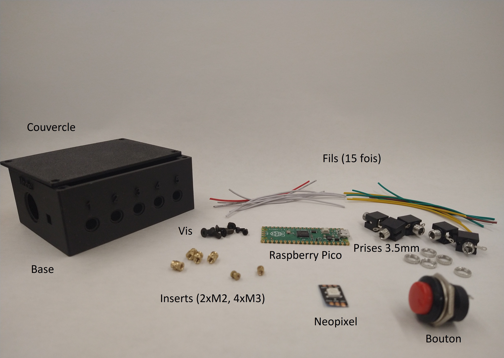- Le boitier s'imprime en PLA, sans support. C'est un modèle simple qui devrait se réaliser sans enjeu sur n'importe quel modèle d'imprimante 3D
- Le couvercle s'imprime lui aussi en PLA, sans support.
- En ce qui concerne le reste du matériel, il est possible d'effectuer certaines substitutions, dépendemment de ce que vous avez de disponible. Pour les fils, ce projet utilise une taille de 24AWG, qui est standard en électronique, cependant, un peu plus gros ou petit serait adéquat. Quinze fils d'une longueur de 60 à 70 mm sont préparés d'avance. Utiliser un code de couleur rend la conception plus simple et est aussi aidante par la suite au cas ou des réparations ou des modifications doivent être apportés. Normalement, le blanc est utilisé pour les connexions neutres, le rouge pour le courant et les autres couleurs pour les signaux. Pour ce projet, sept fils neutres, un fil de courant et sept fils de signaux sont nécessaires. La neopixel peut être coupé d'une barre de led de type WS2812B. Pour les prises et le bouton, il faut s'assurer d'avoir les petits boulons (normalement inclus dans l'achat) car ceux-ci seront vissés à la base de plastique.
Assemblage
-
Préparer les prises
fer à souder, troisième main
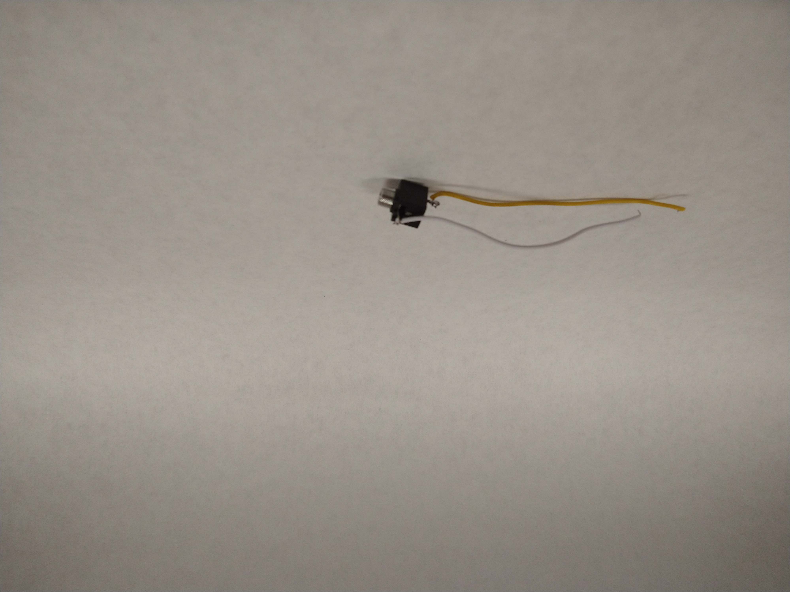 Les prises utilisées ont trois petits morceaux de métal qui sortent de leur base. Ce sont les terminaux sur lesquels les fils seront soudés. Celui du milieu ne sera pas utilisé. Souder un fil blanc et un fil de couleur à chacun des autres terminaux. Répéter pour chacune des cinq prises.
-
Préparer le bouton
fer à souder, troisième main
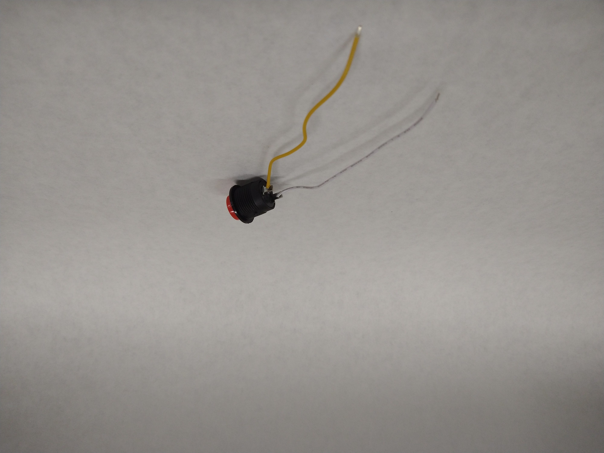 Souder un fil de couleur et un fil blanc à chacun des deux terminaux du bouton. Ce bouton servira à choisir le mode de l'appareil.
-
Préparer le neopixel
fer à souder, troisième main
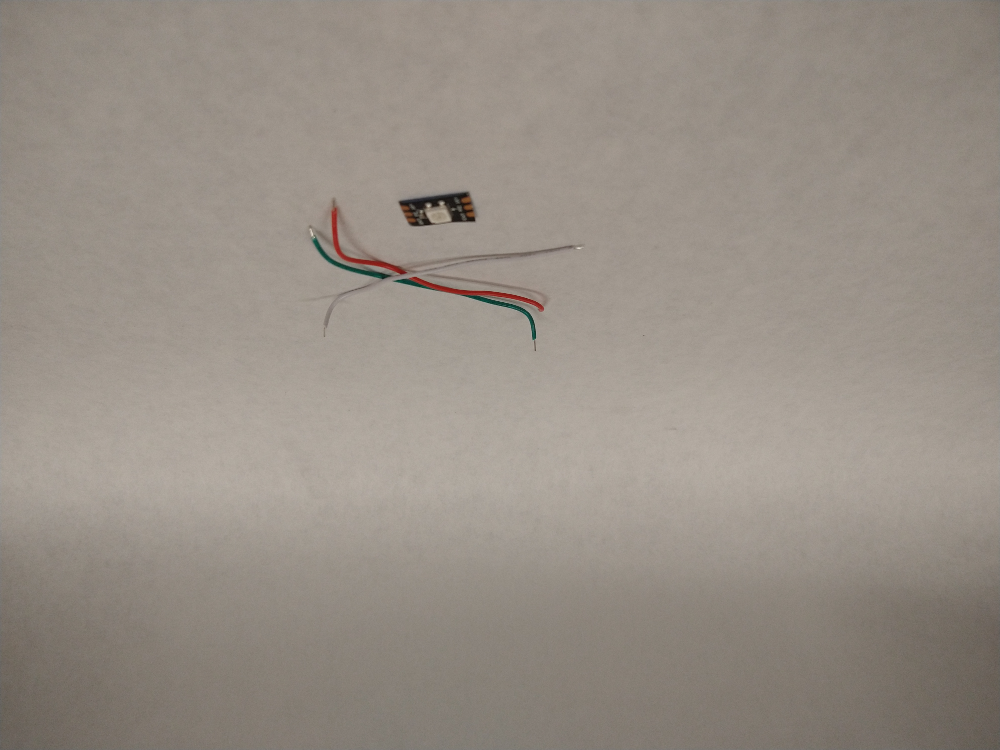 Le neopixel va permettre d'indique quel est le mode actuel de l'appareil; c'est un indice visuel pour l'utilisateur. Les fils doivent être soudés dans la même direction que la petite flèche qui est imprimée sur le circuit, qui indique dans quelle direction le courant circule. Le fil rouge (courant) doit être soudé où il est écrit 5V. Le fil de couleur doit être soudé au terminal du milieu, qui est typiquement identifié comme DIN. Le fil blanc (neutre) doit être soudé où il est écrit GND. Alors que les fils des prises et du bouton peuvent être placés de manière interchangeable, ceux du neopixel doivent être au bon encroit puisque du courant y circule.
-
Préparation du boitier
Fer à souder, pinces
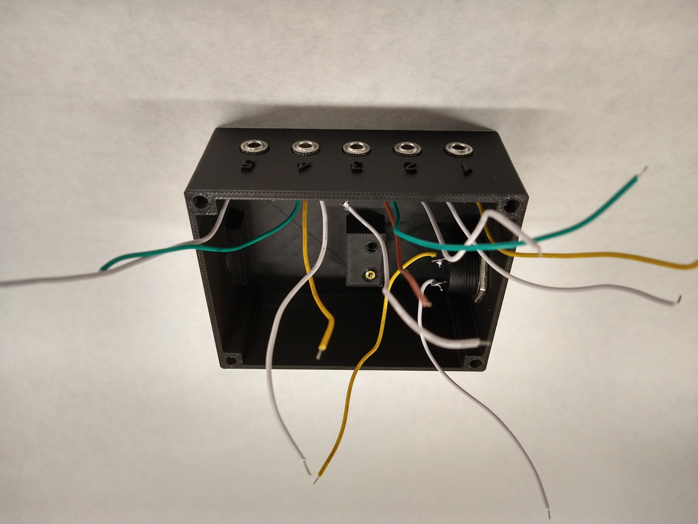 D'abord, utiliser le fer à souder afin d'introduire les inserts de cuivre M2 dans les deux petits trous à l'intérieur du boitier. Puis, visser les cinq prises en utilisant leurs boulons dans les cinq trous correspodants du boitier. Finalement, insérer le bouton dans le boitier (par l'extérieur), puis visser le boulon le retenant à l'intérieur.
-
Soudure du Rapsberry Pico
fer à souder, troisième main
C'est l'étape la plus laborieuse, pour laquelle il faut être patient. Chacun des 15 fils (10 pour les prises, 3 pour le neopixel et 2 pour le bouton) doit être soudé à un endroit spécifique du microcontroleur afin de fonctionner avec le code qui est fourni. Le diagramme du circuit est ci-dessous; pour résumer, un fil par prise se connecte sur les terminaux suivants de gauche à droite 16-17-18-19-20 alors que le 15 est le mode et le 14 le signal du neopixel. Le fil 5V du neopixel est connecté sur 3.3v out pour recevoir du courant (3v est plus que suffisant pour une LED). Les sept autres fils, qui sont connectés aux terminaux GND, peuvent être branché sur ceux-ci de manière interchangeable sur le microcontrôleur, ils remplissent tous la même fonction. Ils sont en noir sur ce diagramme, étant donné que le fond est blanc, mais si vous suivez les recommandations ci-haut, ce sont les sept fils blancs. Il faut souder les fils sur le dessus du microcontrôleur, afin de lui permettre de bien être appuyé sur la base.
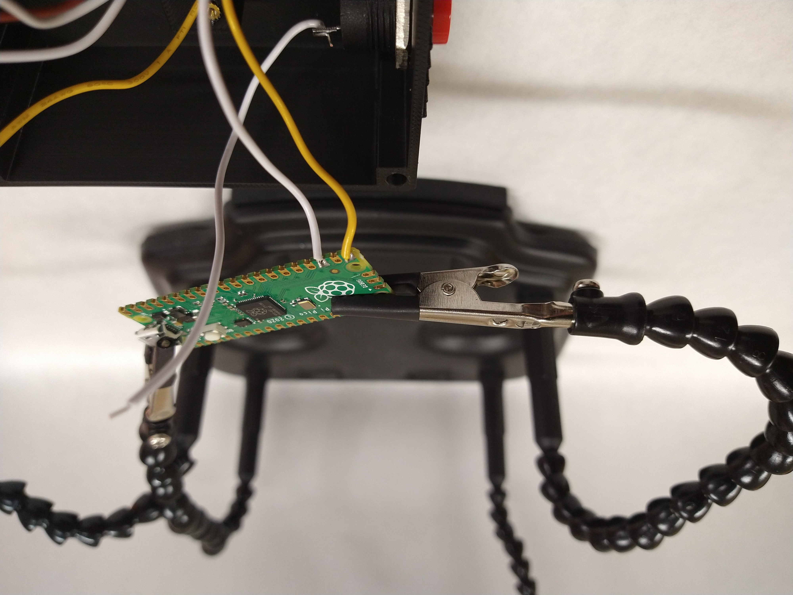 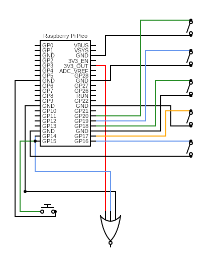 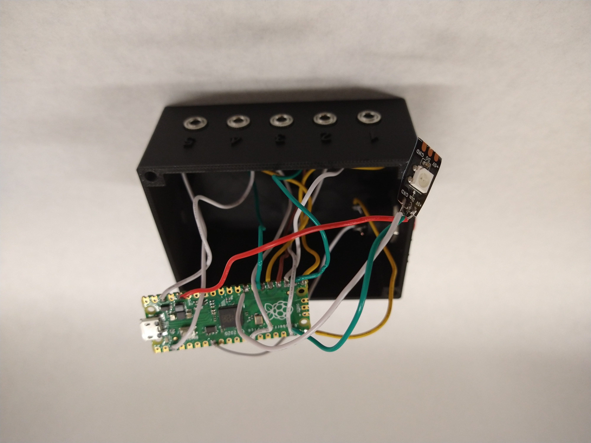 -
Finition
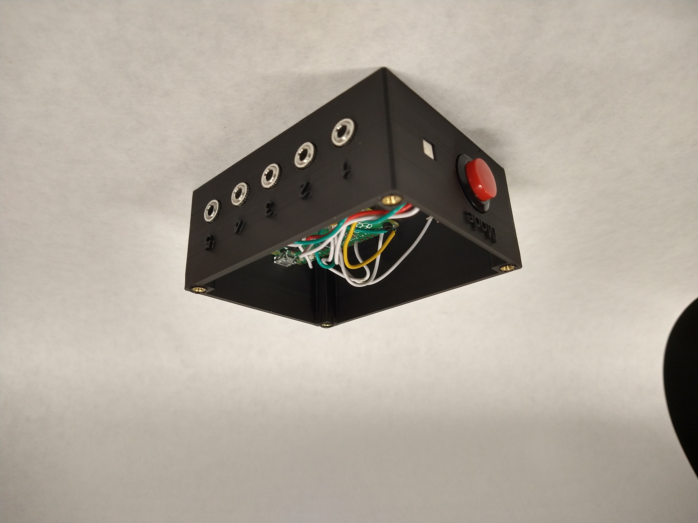 Avant de placer le microcontrôleur, intégrer les inserts de cuivre (4xM3) aux quatre extrémités supérieures du boitier à l'aide du fer à souder. Cette étape peut aussi être réalisée en amont lors de la préparation du matériel, si souhaité. Ensuite, utiliser un peu de colle chaude afin de fixer en place le neopixel dans le petit trou carré dans le boitier. Visser le microcontrôleur en place à l'aide des deux vis M2. Il doit être suffisament stable pour permettre à l'utilisateur de brancher et débrancher le fil micro USB sans qu'il ne change de position. Il faut procéder délicatement afin de ne pas rompre de connexions.
-
Vérification
 Il ne reste plus qu'à s'assurer que tout fonctionne bien et que tout soit en place. Un bon moyen de vérifier est de regarder s'il reste des pièces ou des fils. Tous les fils devraient être connecté d'un côté à une composante (neopixel, bouton ou prise) et de l'autre au microcontroleur. Une fois que tout cela est fait, le couvercle peut être vissé à l'aide des quatres vis M3 au boitier. Cependant, il est généralement suggéré d'attendre d'avoir terminé la programmation de l'appareil avant de le fermer, puisque des ajustements peuvent parfois être nécessaires suite à celles-ci.
Il ne reste plus qu'à s'assurer que tout fonctionne bien et que tout soit en place. Un bon moyen de vérifier est de regarder s'il reste des pièces ou des fils. Tous les fils devraient être connecté d'un côté à une composante (neopixel, bouton ou prise) et de l'autre au microcontroleur. Une fois que tout cela est fait, le couvercle peut être vissé à l'aide des quatres vis M3 au boitier. Cependant, il est généralement suggéré d'attendre d'avoir terminé la programmation de l'appareil avant de le fermer, puisque des ajustements peuvent parfois être nécessaires suite à celles-ci.
Préparation du microcontrôleur
Il ne reste plus qu’à préparer le logiciel du microcontrôleur. Cette étape ne requiert pas de connaissances particulières en informatique. Il suffit de télécharger quelques fichiers et de les placer au bon endroit. Avant de commencer, brancher le raspberry pico à votre ordinateur. Les instructions suivantes sont conçues pour un PC mais seraient aussi compatibles pour IOS.
- Circuitpython: il faut d'abord signaler au microcontrôleur que la plateforme utilisée sera le circuitpython, afin d'être compatible avec la programmation qui est fournie. Cela va préparer l'appareil à recevoir les fichiers qui vont lui donner les instructions nécessaires. D'abord, aller télécharger le fichier sur la page officielle de circuitpython à l'endroit indiqué sur l'image ci-dessous. Ensuite, prendre le fichier UF2 téléchargé et le glisser sur l'emplacement du raspberry pico (il va apparaître comme une clé USB nomme RPI-RP2 dans les dossiers de l'ordinateur). Une fois que c'est fait, le dossier va disparaître quelques secondes puis revenir sous le nom de CIRCUITPY, comme sur les captures d'écran ci-contre.
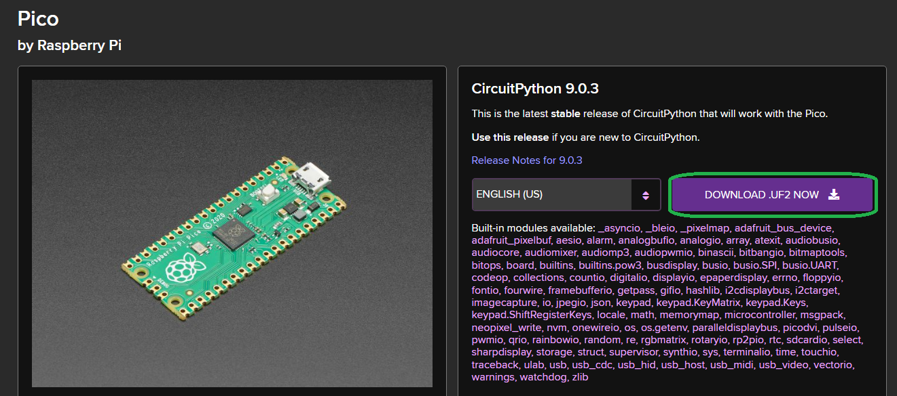 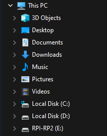 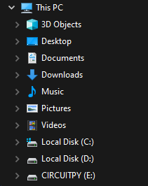
- Bibliothèques: une explication sur leur fonction se trouve ici . Pour cette étape, il suffira de remplacer le dossier lib qui est actuellement enregistré dans le microcontrôleur (à l'emplacement CIRCUITPY) par le dossier lib que vous pouvez télécharger ici. Copiez/collez et accepter lorsqu'un message demandant si vous souhaitez le remplacer apparait. L'appareil va utiliser ces bibliothèques dans sa programmation. Il est important de ne pas changer le nom lib car cela aurait comme effet que celui-ci ne saurait pas où trouver les informations nécessaires à son bon fonctionnement.
- Code: À l'instar des bibliothèques, il suffit de télécharger le fichier code.py (il ne faut pas en modifier le nom) disponible ici et le glisser sur le disque CIRCUITPY. Toute la programmation permettant à l'appareil de bien fonctionner s'y retrouve. Lorsque branché, l'appareil exécutera cette programmation, qui lui dicte son fonctionnement.
- Instructions: Le fichier texte suivant peut être copié sur le disque CIRCUITPY. Il contient les informations par rapport aux différents modes. Il est fortement recommandé de le télécharger et de l'inclure dans le projet, bien que ce ne soit pas absolument nécessaire au bon fonctionnement de l'appareil.
Une fois ces étapes terminées, l’appareil devrait être pleinement fonctionnel. Pour le tester, branchez le à un ordinateur. Appuyez sur le bouton mode (le neopixel devrait changer de couleur, de rouge, à vert, à bleu, à cyan pour finir par jaune). Branchez une switch dans chacune des cinq prises et testez si la touche qui devrait être appuyée est enregistrée par l’ordinateur. Une fois que cela est fait, l’appareil est prêt à être utilisé.